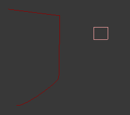
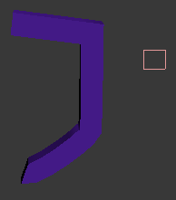
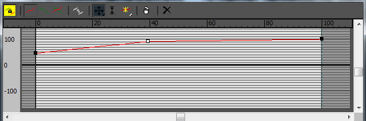
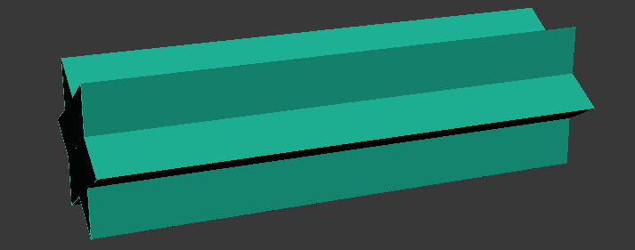
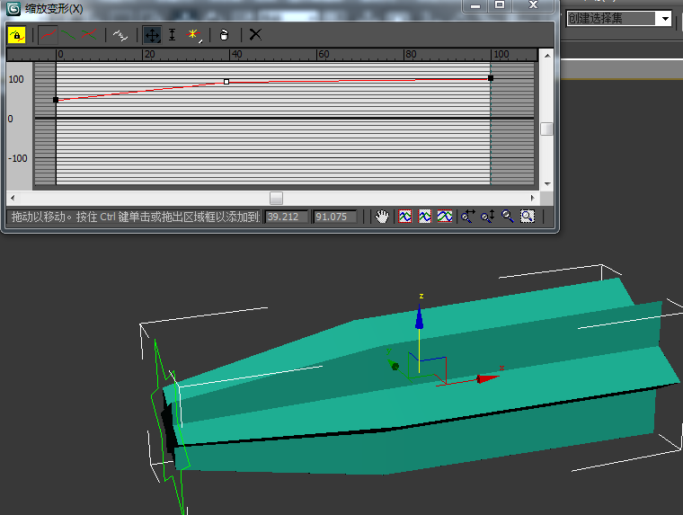
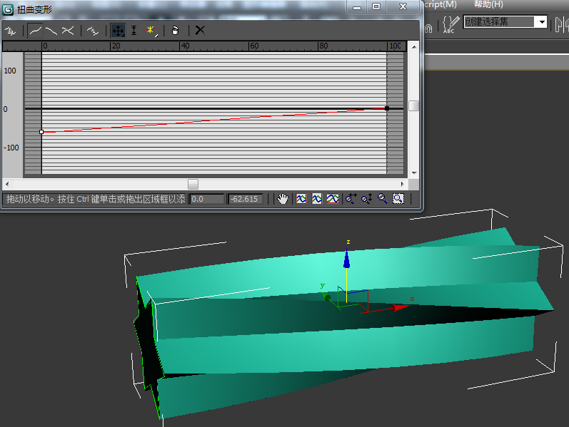
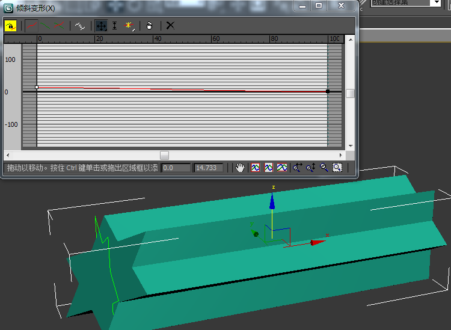

bool
bool 用於計算 兩個模型的 交 並 差 集 等(進行bool運算) 首先 選擇一個模型 之後 命令面板->創建->集合體->複合對象->布爾->參數->操作 (設置bool運算方式) 最後 命令面板->創建->集合體->複合對象->布爾->參數->拾取布爾->拾取操作對象B (選擇進行bool的另外一個模型)
注意
在進行過一次bool運算後 需要先把命令面板 切換到其他面板 之後再進行下次bool運算 (否則只是修改此次bool運算)
放樣
放樣 將一個圖形 沿著一個 路徑 走過 形成 3D模型 首先 選擇一個路徑 之後 命令面板->創建->幾何體->複合對象->放樣->創建方法->獲取圖形 最後 選擇圖形 創建好放樣後 可以將愛那個原 圖形 路徑 刪除 放樣
修改放樣
在 創建號放樣後 修改 路徑 和 圖形 可以影響放樣效果
(需要 在放樣前 把路徑 圖形 轉化為可編輯樣條線)
修改路徑的 插值 無法改變 放樣模型的圓滑度(放樣物體使用單體的平滑度)
選擇放樣模型->命令面板->修改->蒙皮參數->選項->路徑步數 修改路徑平滑度
選擇放樣模型->命令面板->修改->蒙皮參數->選項->路徑步數 修改圖形平滑度
在刪除路徑 圖形 後
展開 放樣模型->命令面板->loft 可以選擇 對圖形/路徑 級別修改
放樣變形
命令面板->修改->變形 中 提供了多個變形參數 下圖為 變形 控制器  (紅線 表示 對路徑何處 進行變形 最上端菜單最後三個個按鈕可以 增加 刪除 重置 控制點) (菜單最左邊的按鈕 可以控制 只沿著某個軸 變形[需要先 點擊 最左邊的 鎖 解開鎖定]) 
縮放 
扭曲 
傾斜 